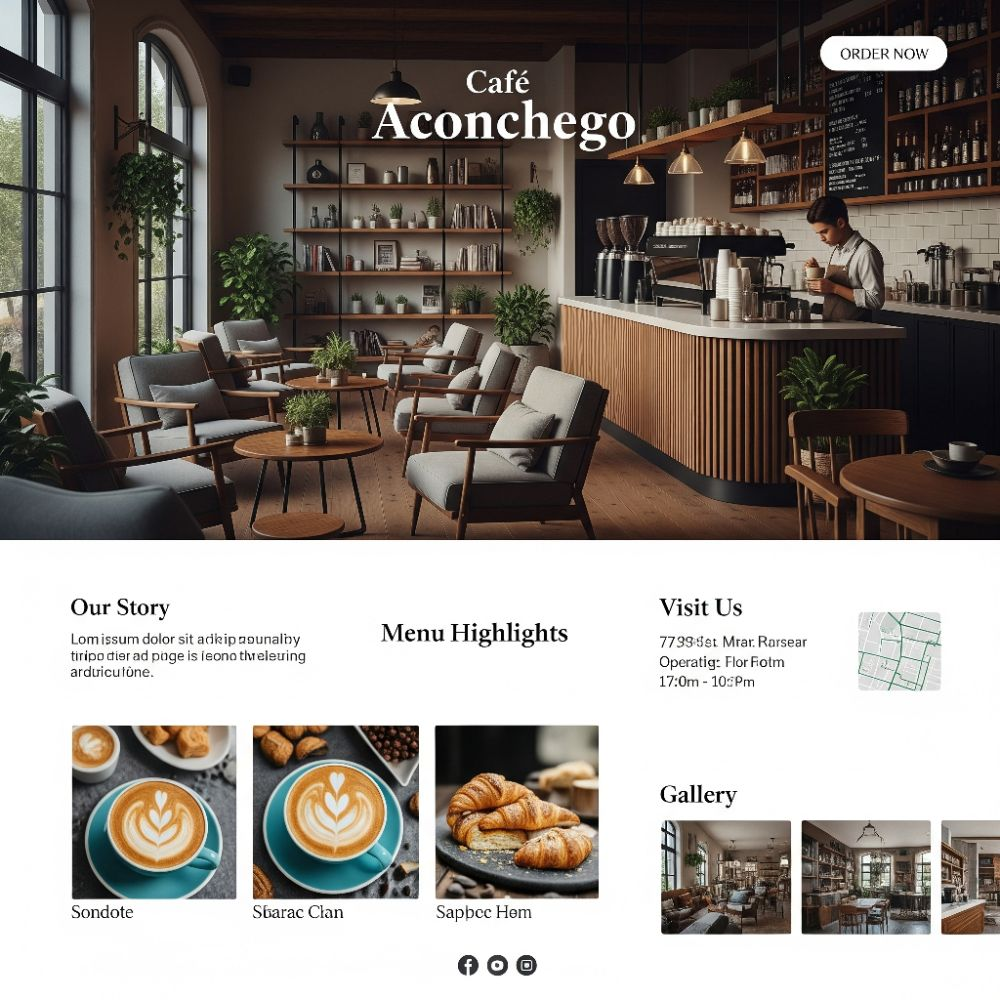
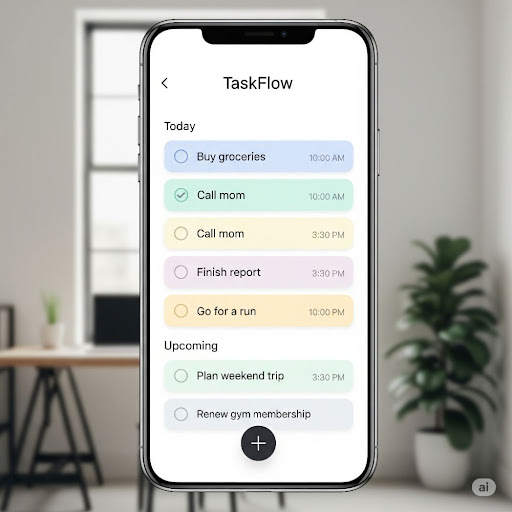
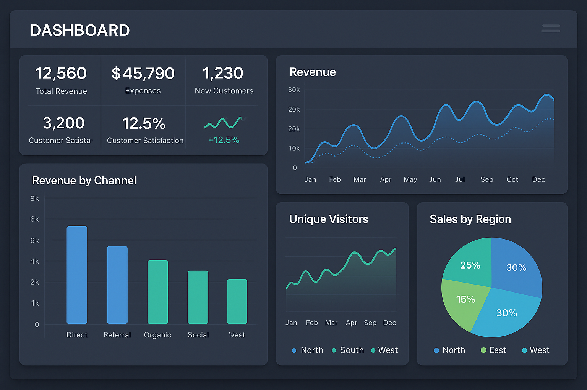

Meus Projetos

Website Café Aconchego
Um site institucional moderno e responsivo para uma cafeteria, apresentando o menu, a história e a localização.

App de Tarefas TaskFlow
Interface de um aplicativo para gerenciamento de tarefas diárias, com foco em uma experiência de usuário simples e limpa.

Dashboard DataViz
Um painel de visualização de dados para análise de métricas de negócios, com gráficos interativos e layout profissional.